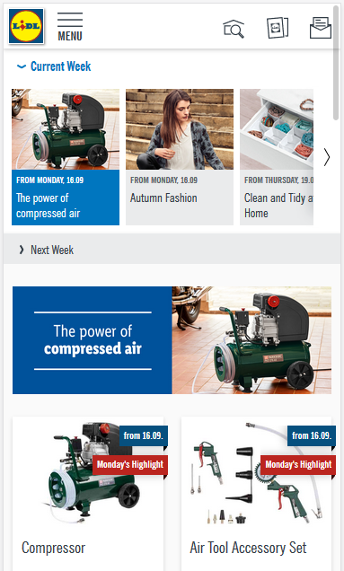

LIDL Malta non-food offers
LIDL Malta updates non-food offers every Monday and Thursday but do not offer any RSS feed to make it easier for users to keep updated. This Feed aims to fill in that gap by scraping the LIDL offers and making them available as an RSS feed.
All images, text and links are the ones found in the original web site.
